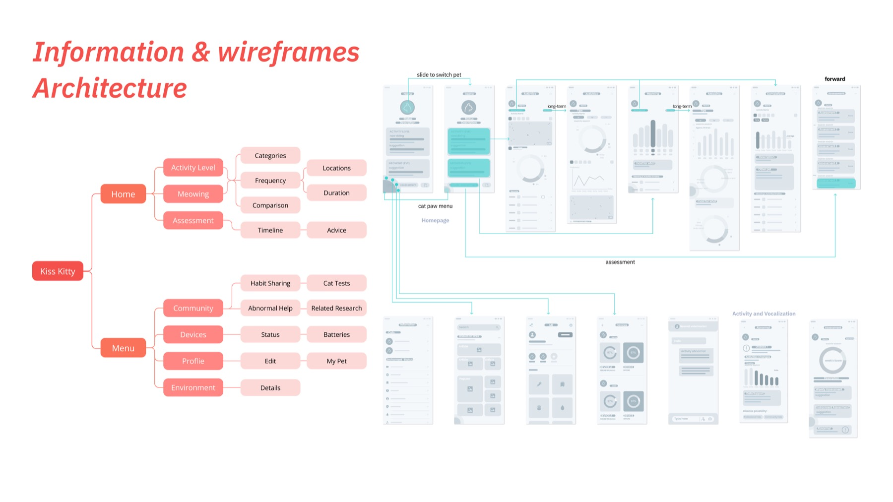
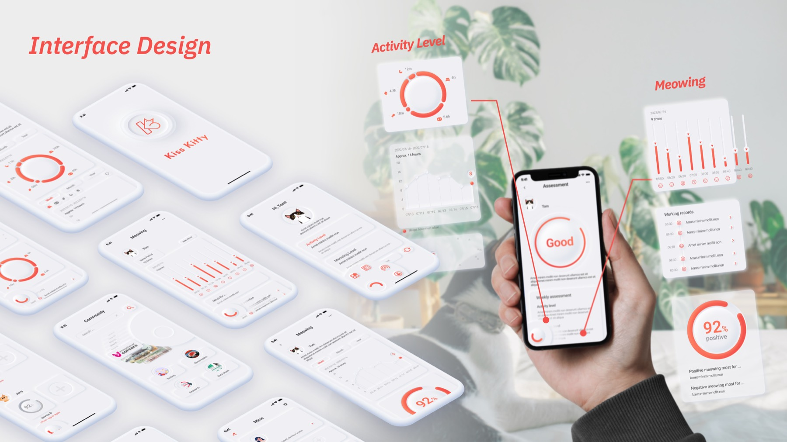
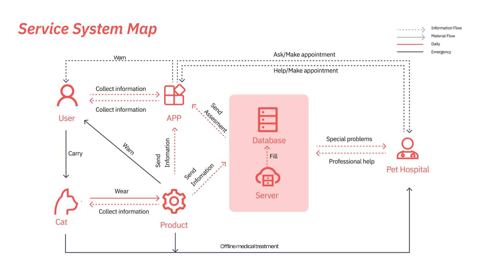

活动、声音与习惯只是线索，不是诊断。


Archive
Notice a change
before naming a diagnosis.
猫咪的不适可能先表现为活动、叫声或日常节律的细微变化。这个项目把问题定义为“帮助主人注意到异常”，而不是让消费级设备替代兽医判断。
概念由环境中的采集触点、个人基线、趋势回顾和就医沟通组成。今天回看，它最有价值的部分是服务关系和风险边界，而不是当年的界面完成度。
System thought
数据只有回到基线与行动，
才可能有意义。
单次读数容易制造焦虑。概念因此更关注个体长期变化、可解释的提醒，以及把观察带入专业咨询的下一步。
变化相对个体历史被理解，而不是套用统一标准。
界面帮助回顾和沟通，不给出虚假的医疗确定性。

Retrospective
A credible direction,
not a validated health product.
What remains useful
把传感器、解释界面和专业支持看成一条服务链，并明确“提醒关注”与“给出结论”之间的边界。
What is missing
概念没有临床验证、长期设备数据或真实家庭试用，因此不把原型描述成已经改善健康结果的产品。